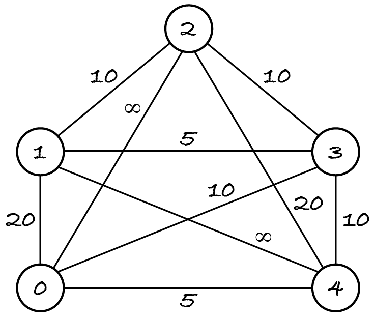

22.5. Back to the TSP
In this section, we solve an optimisation problem with backtracking: the travelling salesman problem (TSP).
shortest is a tour that starts and ends at node 0
no other tour of graph has a lower total weight than shortest
Real networks seldom have connections between all nodes, but we can model any network as a complete graph by adding the missing edges with infinite weight. This prevents them from being selected for a shortest tour.
Here’s a graph to test the algorithm. Edges 0–2 and 1–4 have infinite weight, to show they’re missing in the network being modelled.
The graph has 4! = 24 tours that start and end at node 0, but only those of finite length exist in the network modelled by the graph: (0, 1, 2, 3, 4, 0), (0, 1, 2, 4, 3, 0), (0, 1, 3, 2, 4, 0), (0, 3, 1, 2, 4, 0) and the reverse sequences. The shortest tours are (0, 3, 1, 2, 4, 0) and (0, 4, 2, 1, 3, 0) with length 50.
[1]:
import math
%run -i ../m269_digraph.py # (un)weighted directed graph classes
%run -i ../m269_ungraph.py # undirected graph classes inherit from directed
example = WeightedUndirectedGraph()
for node in range(5):
example.add_node(node)
example.add_edge(0, 1, 20)
example.add_edge(0, 2, math.inf)
example.add_edge(0, 3, 10)
example.add_edge(0, 4, 5)
example.add_edge(1, 2, 10)
example.add_edge(1, 3, 5)
example.add_edge(1, 4, math.inf)
example.add_edge(2, 3, 10)
example.add_edge(2, 4, 20)
example.add_edge(3, 4, 10)
Previously, we started with high-level questions about what the items, the candidates and the solutions are, to have a good understanding of the problem before solving it. Another approach is to let the backtracking code template guide the questions.
22.5.1. The main function
The TSP is an optimisation problem on tours, which can be represented as sequences of nodes. So let’s start with the main function template for optimisation problems on sequences.
SOLUTION = 0
VALUE = 1
def problem(instance: object) -> list:
"""Return the best solution and its value for the problem instance."""
candidate = []
extensions = ...
solution = ...
best = [solution, value(solution)]
extend(candidate, extensions, instance, best)
return best
Let’s go through it line by line.
The problem is the TSP and the instance is a weighted undirected graph, so the function header becomes:
def tsp(graph: WeightedUndirectedGraph) -> list:
Usually, the initial candidate is the empty sequence and the initial extensions form a set of items to be added to the sequence, each item occurring at most once in a solution. For the TSP problem that’s not true: node 0 occurs at the start and end of each tour. To be able to generate tours, the root candidate must be sequence (0) and the extensions are all the nodes in the graph, so that node 0 can be added a second time to the sequence.
candidate = [0]
extensions = graph.nodes()
As for initialising the best solution, I could construct the tour (0, 1, 2, …, n–1, 0) and compute its length.
solution = sorted(graph.nodes()) + [0]
best = [solution, value(solution)] # function value to be written
However, I take the opportunity to show you a trick that works for any optimisation problem on sequences, especially when there’s no easy way of constructing a good initial solution. We start with a ‘pseudo-solution’ (usually the empty sequence) and an infinitely high or low value, depending on whether it’s a minimisation or maximisation problem. This guarantees that the first solution found is necessarily better.
The TSP is a minimisation problem, so we start with an infinitely high value.
solution = []
best = [solution, math.inf]
The problem only asks for the tour, not its length, so the last template line becomes:
return best[SOLUTION]
Let’s put all this together and make the docstring and variable names less generic.
[2]:
SOLUTION = 0
VALUE = 1
def tsp(graph: WeightedUndirectedGraph) -> list:
"""Return a tour-length pair with shortest length.
Preconditions:
graph is complete, has nodes 0, 1, ..., and positive weights
Postconditions: tour starts and ends at node 0
"""
path = [0]
nodes = graph.nodes()
solution = []
shortest = [solution, math.inf]
extend(path, nodes, graph, shortest)
return shortest[SOLUTION]
The backtracking algorithm, implemented by function extend, is mostly boilerplate. The problem-specific computations are in the auxiliary functions that compute the value of a candidate and check the constraints, so let’s tackle them next.
22.5.2. The value function
For any optimisation problem, we must compute the value of a candidate to know whether it improves on the best solution so far. For the TSP, what is a candidate and what does the value function compute?
A candidate is a sequence of nodes representing a path starting at node 0. The function computes the total weight of the edges between consecutive nodes. The next exercise asks you to implement the value function. Before that, I recommend you uncomment and run the next code line to remind yourself of the available graph methods and their parameters.
[3]:
# help(WeightedUndirectedGraph)
Exercise 22.5.1
For this and the following exercises, you’re given a code template that you must adapt and complete for the TSP. Adapting the code means to:
replace the generic docstrings and identifiers with problem-specific ones (you can press F, not Shift-F, in command mode to find and replace text in the current cell or in all cells)
remove any unnecessary parameters.
Adapt and complete the following value function template for the TSP.
[4]:
def value(candidate: list, instance: object) -> int:
"""Return the value of the candidate sequence for the problem instance."""
pass # replace with your code
value([0, 1, 2, 3, 4, 0], example) == 55
22.5.3. Checking the constraints
Two auxiliary functions check the global and local constraints on candidates. For the TSP, candidates are paths (sequences of nodes) starting at node 0, and solutions are candidates representing tours. The questions to think about are as follows.
Can partial candidates be solutions?
A tour has all the graph’s nodes, so solutions must be complete candidates; that is, when there’s no further node to add to the sequence.
What are the constraints on a complete candidate for it to be a solution?
The candidate path ends with node 0 and each node has an edge to the next one.
Which constraints are local (can be checked on partial candidates) and which are global (must be checked on complete candidates)?
The existence of edges between consecutive nodes is a local constraint. The sequence ending with node 0 is a global constraint.
Exercise 22.5.2
Adapt and complete the next code template for the TSP.
[5]:
def satisfies_global(candidate: list, instance: object) -> bool:
"""Check if the candidate satisfies the global constraints."""
pass # replace with your code
Section 22.4.3 mentions that if extending a candidate worsens its value, then it shouldn’t be further extended when it reaches the best value so far.
For the TSP, does extending a candidate worsen its value?
The value of a candidate path is its length: the total weights of its edges. The problem definition tells us weights are positive, so extending a path increases its length, which for a minimisation problem is a worse value.
Exercise 22.5.3
Adapt and complete the next code template for the TSP.
[6]:
def can_extend(item: object, candidate: list, instance: object, best: list) -> bool:
"""Check if item can extend candidate into a better solution than best."""
# replace ... with a check for the local constraints
# use < for a minimisation problem
return ... and value(candidate + [item]) > best[VALUE]
22.5.4. The backtracking function
Now we have all auxiliary functions in place for the backtracking algorithm.
Exercise 22.5.4
Adapt the next code template to the TSP. Don’t forget to change the calls to satisfies_global, value and can_extend if you changed their names in the cells above.
[7]:
def extend(candidate: list, extensions: set, instance: object, best: list) -> None:
"""Update best if candidate is a better solution, otherwise extend it."""
print("Visiting node", candidate, extensions)
# remove the next line if partial candidates can be solutions
if len(extensions) == 0:
if satisfies_global(candidate, instance):
candidate_value = value(candidate, instance)
# in the next line, use < for minimisation problems
if candidate_value > best[VALUE]:
print("New best with value", candidate_value)
best[SOLUTION] = candidate
best[VALUE] = candidate_value
for item in extensions:
if can_extend(item, candidate, instance, best):
extend(candidate + [item], extensions - {item}, instance, best)
Finally uncomment the next line and run it to check your solution.
[8]:
# tsp(example) in [ [0,3,1,2,4,0], [0,4,2,1,3,0] ]
The current algorithm still does much wasted work. It keeps extending paths where the second node 0 appears early on, only to later fail the global constraint test. The next exercise asks you to avoid generating such paths.
Note: After applying backtracking, look at the candidates generated and think if there are problem-specific ways of further pruning the search space.
Exercise 22.5.5
Make a copy of your extend function and change it so that a path is extended with node 0 only if it’s the last remaining extension. This guarantees that all complete candidates end with node 0 and you can remove the call to the global constraint check.
Run the example again to see a substantial reduction in the search space.